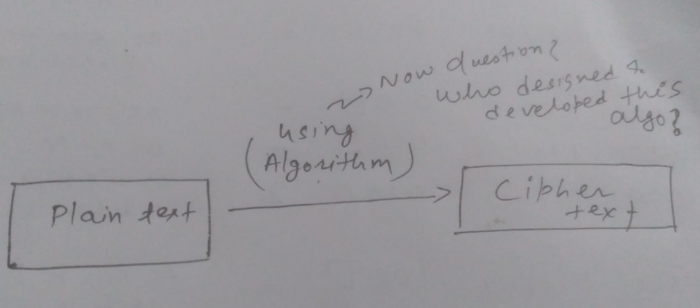

The digital landscape is evolving at an unprecedented pace, with technology giants holding immense influence over our online experiences. However, recent security breaches have raised concerns about data privacy and security. In this article, we explore the merits of open source software and how it can provide a more secure and reliable alternative, learning from the breaches experienced by companies like Google and other industry giants.
Importance of Open Source Software:
Open source software is built on principles of transparency, collaboration, and community-driven development. Its accessible source code allows developers worldwide to review and contribute to the software's security and reliability. This open approach encourages scrutiny and helps identify vulnerabilities, promoting a more secure environment.not convinced yet let's explore more dark side!
Learning from various Data Breach
Google, a technology behemoth, has experienced data breaches that have compromised user privacy. Google is not alone in experiencing security breaches. Several other tech giants have faced similar challenges, exposing user data to potential threats. Such incidents highlight the risks associated with closed-source software, where the source code is proprietary and not open to public scrutiny. This lack of transparency can hinder timely identification and resolution of vulnerabilities, leaving users' data at risk.now let's explore how open source software can solve this?
Open source software benefits from a diverse community of developers who continuously audit and improve the code. This collaborative effort results in prompt detection and resolution of security vulnerabilities. With open source software, users can trust that potential issues are quickly addressed, reducing the risk of data breaches and unauthorized access.
how even encryption is broken
As we are getting attached to many social media and chat apps which claim to be encrypted or provide some kind of encryption: so one may argue even close source apps are safe and fully secure this is true till certain extent but when you dive deeper you will get very different view. as encryption refers to :
"Encryption is the process of converting plain, readable data or information into a coded form known as ciphertext to prevent unauthorized access during transmission or storage. It involves using an algorithm and a cryptographic key to convert the original data into an unreadable format. Encryption ensures data confidentiality, integrity, and security by making it difficult for unauthorized individuals to interpret or manipulate the information without the corresponding decryption key. It is widely used in various applications, including secure communication, data protection, and safeguarding sensitive information."but wait a second! who designs the algorithms involved in converting plain text to cipher text the data gatherers, manupulators how can anyone trust their assurance after so many breaches.many close source softwares claim end-to-end encrypted but their are incidents of key compromises.They claim for 100% security but why they are afraid or never put even their encryption mechanism/algo over the internet! why?
still not convinced?
Trust, Control, and PrivacyBy embracing open source software, users gain greater control over their digital lives. They can verify the integrity of the code, ensuring their data remains private and secure. Open source software allows users to choose trusted solutions that prioritize transparency, minimizing the risk of unexpected data breaches and unauthorized surveillance.
Open Source Ecosystem & Ever Expanding Horizons:
The open source community offers a vast array of software across various domains. From operating systems to office productivity suites, from web browsers to content management systems, open source alternatives are widely available. Embracing open source solutions not only enhances security but also supports a diverse and collaborative ecosystem that fosters innovation.In a digital landscape increasingly vulnerable to security breaches, it is imperative to reevaluate our software choices. Open source software stands as a beacon of trust, transparency, and security, providing users with reliable alternatives to proprietary, closed-source solutions. By learning from the breaches experienced by tech giants like Google, we can recognize the importance of open source software and its ability to prioritize privacy, control, and user empowerment. Embracing open source is not just a technological shift but a step toward a safer, more secure digital future.